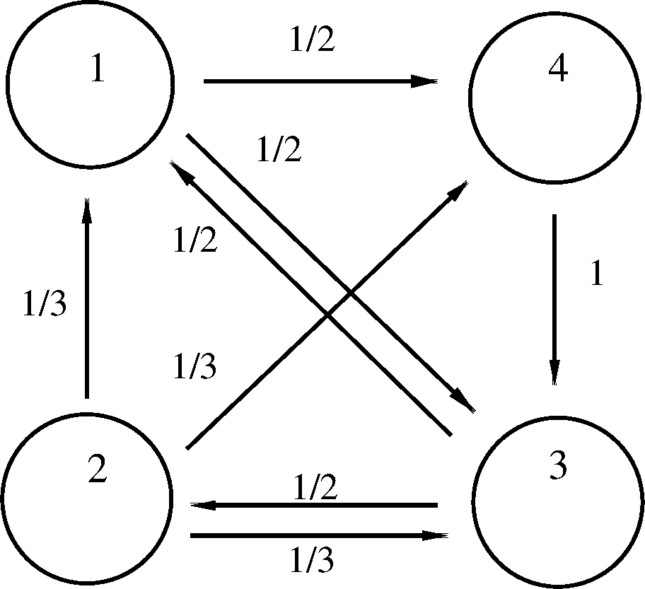

eigen/concepts
April 19, 2026
In a rabbit population (considering only females) we have 3 age categories. We know the survival rates s=(0.8,0.25,0), that is 80\% of the newborn rabbits survive the first year, 25\% of the one-year old rabbits survive to the second year, and 0\% of the 2-years old rabbits survive to the third year ( it is the end of their biological life cycle). In addition the average reproduction rates are also known: r=(0,1,1), which means that a i years old rabbit reproduce m_i rabbits.
Q1
Starting from a (10,10,30) population, what is the expected distribution (for the age categories) after 1,2,4, N years?
A1
- It turns out that the evolution of the model can be described by a matrix:
L= \begin{bmatrix} r_0 & r_1 & r_2 \\ s_0 & 0 & 0 \\ 0 & s_1 & 0 \\ \end{bmatrix}
If the age distribution is (x_0,x_1,x_2) in the current year, Lx will be the next years distribution. Here we have: L= \begin{bmatrix} 0 & 1 & 1 \\ 0.8 & 0 & 0 \\ 0 & 0.25 & 0 \\ \end{bmatrix} and
x= \begin{bmatrix} 10 \\ 10 \\ 30 \\ \end{bmatrix} So, after N years the age distribution of rabbits will be L^{N}x normed appropriately.
Q2
Are there any starting distribution that will not change (as a distribution, not as a raw vector) during the years?
A2
We are searching for such an x for which Lx=\lambda x with a \lambda>0 real number.
We are going to assign a rank/weight to the web-sites. Consider the following simple network:

The browsing model is the following: initially the user chooses a page uniformly. Then, at each steps he chooses a new page uniformly among the accessible pages and goes there. If the current (probability) distribution is [p_1,\ldots,p_4]^{T} then in the next step the distribution will be Ap, where
A=\left(\begin{array}{rrrr} 0&\frac 13&\frac 12&0\\ 0&0&\frac 12&0\\ \frac 12&\frac 13&0&1\\ \frac 12&\frac 13&0&0 \end{array}\right)
Q
Repeating the steps indefinitely what is the limiting distribution (if any)? Naturally the higher probabilty sites are more attractive in this model, and we think that they are ranked higher than the lower ones.
A
For A\in {\mathbb R}^{n\times n} the value \lambda \in \mathbb{C} is an eigenvalue and the vector v\ne 0 is the eigenvector belonging to \lambda iff:
Av=\lambda v
After rearrangement: (A-\lambda E)v=0 When \lambda is given it is a homogeneous system of linear equations for the vector v. There are non-trivial solutions only for those \lambda values for which
\det (A-\lambda E)=0
This is the characteristic equation for A.
\begin{gather*} A=\left( \begin{array}{rr} -2&3\\-4&5 \end{array}\right)\\ \det (A-\lambda E)=\left\vert \begin{array}{cc} -2-\lambda&3\\-4&5-\lambda \end{array}\right\vert =(-2-\lambda)(5-\lambda)+12\\ \lambda^2-3\lambda+2=0\\ \lambda_1=2,\ \ \lambda_2=1 \end{gather*}
\begin{gather*} A=\left( \begin{array}{rr} 3&1\\-1&1 \end{array}\right)\\ \det (A-\lambda E)=\left\vert \begin{array}{cc} 3-\lambda&1\\-1&1-\lambda \end{array}\right\vert =(3-\lambda)(1-\lambda)+1\\ \lambda^2-4\lambda+4=0\\ \lambda_{1,2}=2 \end{gather*}
\begin{gather*} A=\left( \begin{array}{rr} -1&-5\\1&3 \end{array}\right)\\ \det (A-\lambda E)=\left\vert \begin{array}{cc} -1-\lambda&-5\\1&3-\lambda \end{array}\right\vert =(-1-\lambda)(3-\lambda)+5\\ \lambda^2-2\lambda+2=0\\ \lambda_1=1+i,\quad\quad \lambda_2=1-i \end{gather*}
For an arbitrary square matrix A
- if \lambda is an eigenvalue of A, then any nonzero solution of a homogeneous system (A-\lambda E)x=0 is an eigenvector associated with \lambda.
- A is invertible iff. none of its eigenvalue is zero.
- if \lambda is an eigenvalue of A^{-1}, then \frac{1}{\lambda} is an eigenvalue of A.
- if \lambda is an eigenvalue of A, then \lambda^2 is an eigenvalue of A^2.
- if \lambda is an eigenvalue of A and c \in \mathbb{R}, then \lambda+c is an eigenvalue of A+cE.
- the set of eigenvectors corresponding to a (fixed) \lambda together with the zero vector form a subspace.
- eigenvectors associated with different eigenvalues are independent.
eigbuiltin functionval=eig(A)will return a vector of eigenvalues[vec,val]=eig(A)will return two matrices: thevecis a matrix of eigenvectors (they have unit euclidean lengths) thevalis a matrix with the eigenvalues in its (main) diagonal.
- \lambda is a dominant eigenvalue iff |\lambda|>|\mu| for each eigenvalue \mu\neq\lambda
- power iteration is a method for approximating the dominant eigenvalue and the corresponding eigenvector.
Given the matrix A\in{\mathbb R}^{n\times n} and a starting vector x^{(0)}\in {\mathbb R}^n, x^{(0)}\ne 0. The iteration:
x^{(k+1)}:=Ax^{(k)},\ \ x^{(k+1)}=\frac{x^{(k+1)}}{||x^{(k+1)}||} \ \ \ \ k=0,1,\dots
- the matrix A has n different eigenvalues
- A has a (real) dominant eigenvalue, say \lambda_n
- ||x_0||=1
- (x^{(0)},v_n)\ne 0 for the eigenvector v_n belonging to the eigenvalue \lambda_n
Then the sequence { x^{(2k)}} defined by the power iteration converges to an eigenvector belonging to the dominant eigenvalue \lambda_n
- the 2k “hack” with the index is for cover the negativ dominant eigenvalue case.
- suppose that the ||v_k||=1
- verify, that
\begin{gather*} ||x_0||=1\\ x_m=\frac{A^m x^{(0)}}{||A^m x^{(0)}||} \\ y_0=x_0 \ \ \ \ y^{(m+1)}=\frac{Ay^{(m)}}{||Ay^{(m)}||} \\ \implies\ \ x_m = y_m \end{gather*}
\begin{gather*} x^{(0)}=\sum \alpha_k v_k\ \ \ \alpha_n\neq 0\\ A^{m}x^{(0)}=\sum_{k<n} \alpha_k \lambda_k^m v_k + \alpha_n \lambda_n^m v_n\\ \frac{A^{m}x^{(0)}}{\alpha_n \lambda_n^m}=v_n+\sum_{k<n} \frac{\alpha_k}{\alpha_n} \left(\frac{\lambda_k}{\lambda_n}\right)^m v_k \\ \frac{A^{m}x^{(0)}}{\alpha_n \lambda_n^m}=v_n+e_m\ \ \ \ e_m\to 0\\ \text{because, with }\ \ q=\max_{k<n} \left| \frac{\lambda_k}{\lambda_n}\right|<1\\ \left\Vert e_m \right\Vert\le \left\Vert\sum_{k<n} \frac{\alpha_k}{\alpha_n} \left(\frac{\lambda_k}{\lambda_n}\right)^m v_k\right\Vert < \sum_{k<n} \left\vert\frac{\alpha_k}{\alpha_n}\right\vert q^m \to 0 \\ \frac{A^{2m}x^{(0)}}{||A^{2m}x^{(0)}||}=\frac{A^{2m}x^{(0)}}{\alpha_n \lambda_n^{2m}} \frac{\alpha_n \lambda_n^{2m}}{||A^{2m}x^{(0)}||}\stackrel{=}{\text{2m hack}}\\ \frac{A^{2m}x^{(0)}}{\alpha_n \lambda_n^{2m}} \frac{1}{||v_n+e_{2m}||}= \frac{v_n + e_{2m}}{||v_n+e_{2m}||} \to v_n \end{gather*}
- the question is when to stop the iteration?
- determines the best \lambda for a given vector
\begin{gather*} ||Ax-\lambda x||_2 \stackrel{\lambda}{\to} \min\\ \lambda=\frac{(Ax)^{T}x}{x^{T}x} \end{gather*}
function [lambda,y,status]=powit(A,y,epsilon,maxstep)
y=y/norm(y);
lambda=dot(A*y,y);
threshold=epsilon*(1+abs(lambda));
status=0;
for i=1:maxstep
y=A*y; y=y/norm(y);
lambdaNew=dot(A*y,y);
if abs(lambda-lambdaNew)<threshold
status=1; break;
end
lambda=lambdaNew;
end
if status==1 && norm(A*y-lambda*y)^2<epsilon
status=2;
end
end
- for approximating the “smallest” eigenvalue
- apply the power method to A^{-1}
- it is impractical to compute the inverse
- Ax^{(m+1)}=x^{(m)} is solved instead
- implement it in the labor!